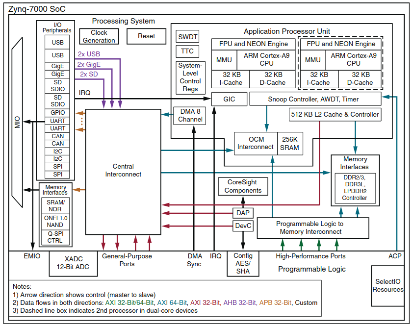

Xilinx/AMD Vivado SoC FPGA Development and Debug Workflow

Source: AMD/Xilinx Zynq-7000 SoC Data Sheet: Overview DS190 (v1.11.1) July 2, 2018, Figure 1Verification of an FPGA design post-synthesis involves several steps, which can be incrementally worked through as the design matures. The following guide provides a decent outline to carry a design from post-simulation all the way to implementation alongside a SoC processor that can control and read the FPGA from software. I originally wrote this guide while working on my Master’s degree, and revised it into a checklist as I found myself doing the same workflows. In situations where one missed step could require you to endlessly debug a phantom issue, it is helpful to have a repeatable process. While this guide is not all-encompassing, it functions as an excellent base framework for a junior FPGA designer to work from.
FPGA Overview (Written for Non-FPGA Developers)
FPGAs are programmable hardware devices that are made up of a grid of repeating programmable logic blocks called “slices” and various other interlinked components, which have rapidly increased in complexity and performance in recent years. A modern Zynq Ultrascale+ MPSoC has two processors (APU and RPU), a GPU, various on-chip memory types (RAM, block RAM, distributed RAM), DMA controllers, serial transceivers, and dedicated I/O interfaces. On the boards they are mounted on, you will also often see additional memory types (DDR3/4), ADC and DACs, I/O peripherals, and more.
Slices vary based on hardware but usually have the same general types of components. Referred to as Configurable Logic Blocks (CLBs) on the Ultrascale MPSoC, they are made up of Look-Up Tables (LUTs), flip-flops (FFs), and multiplexers. Some have additional components like adders or other logic gates thrown in.
Newer FPGAs also have DSP slices, which are dedicated logic blocks for adders, multipliers, accumulators etc. and are instantiated differently to free up the CLBs (or, to reverse that, to free up the valuable multipliers and adders).
When an FPGA is programmed, code such as SystemVerilog (syntactically similar to C) directs the synthesizer to connect or disconnect these slices, filling the lookup tables appropriately to achieve the coded performance on hardware. Understanding how the code synthesizes onto the FPGA is very important for the designer to know for several reasons.
- Since you are programming hardware, some code is not synthesizable as it makes no sense to the compiler to put it on hardware. Examples include “wait” statements, or the “real” datatype. It is also important to be mindful that everything happens in parallel on hardware unless otherwise specified (e.g. a clock is added), so race conditions must be avoided and typical hardware design concerns such as set up time and hold time must be considered (this is referred to as timing closure in FPGA design, and is beyond the scope of this guide).
- You will want your code to utilize the resources on the FPGA as well as hardware resources on the board, and will need to design appropriately for your device. Instead of creating a large array of registers (which will not always properly synthesize into BRAM), you generally will want to instantiate a Xilinx IP for the BRAM component on the board in order to utilize it reliably. Clock signals, rather than being generated with regular FPGA fabric logic (e.g. counters or clock dividers), should be generated from dedicated clocking primitives (PLLs, MMCMs) to avoid poor timing and other issues.
- The processor(s), if used, need to be instantiated and connected to the design. How the design will be controlled from software must be considered, and those components must also be linked and created.
- How hardware components such as DDR3/4, DACs/ADCs, and I/O peripherals need to be controlled properly, which may include both firmware instantiation of controllers as well as proper register manipulation from software.
- Building off of the previous two items, the
component.xmlfile is hardware specific and must define the coded signals to the correct chip pins. Some proprietary FPGA synthesizers have a pre-configured setup, which also needs to be understood by the designer since that generally cannot be changed.
For Xilinx FPGA design, the options are High Level Synthesis (HLS) coding in Vitis or Register Transfer Level (RTL) code in Vivado. RTL is typically preferred by electrical and FPGA engineers who need more control over hardware resources and timing, whereas HLS appeals more to software and embedded developers who can leverage C/C++ familiarity for rapid prototyping. This guide focuses on Vivado and RTL specifically, though Vitis is used in the debugging process as well.
The following sections provide a step-by-step workflow for project creation through hardware debugging, assuming the reader has RTL source files ready for implementation.
Building a Project
Manually create a project in Xilinx Vivado with no sources, selecting only the applicable part type. Source files are then added to the project, and sim files are added separately (as they will be considered sim-only and not for synthesis). This project build can later be automated with .tcl scripts, including the creation of a block diagram, once these source files are added and (if applicable) a block diagram is created. The actual construction of these source files is beyond the scope of this guide, but it assumes .sv, .v, or .vhd files.
It is recommended to keep the source files linked, so that as they are modified the source files outside of the project will continuously update and can be re-added when a project is rebuilt. This may not always be desired behavior, however; especially if you have an automated .tcl build workflow that manages source file versions independently.
Typically, Vivado projects themselves are not saved, as rebuilding Vivado projects is a common way to fix many errors. The project files should be added to .gitignore in most cases.
Timing Constraints and Synthesis/Implementation Analysis
Before proceeding to hardware debugging, proper timing constraints need to be defined in the constraints .xdc file. All clocks should be defined by create_clock entries, and set_clock_groups should define all clock domain crossings. Input or output delays relative to external devices should also be defined using set_input_delay and set_output_delay, respectively. An example is shown below, which can be added to the top-level project’s constraints file.
# Primary clock constraints.
create_clock -period 10.000 -name sys_clk_100mhz [get_ports sys_clk]
create_clock -period 20.000 -name ext_clk_50mhz [get_ports ext_clk]
# Zynq processor clocks are auto-constrained when using Zynq IP, but any clocks generated from custom PLLs need manual definition.
create_generated_clock -name custom_clk_200mhz -source [get_ports sys_clk] -multiply_by 2 [get_pins custom_pll_inst/clk_out]
# Clock domain crossings - mark asynchronous clock groups which do not have a phase relationship.
set_clock_groups -asynchronous -group [get_clocks sys_clk_100mhz] -group [get_clocks ext_clk_50mhz]
set_clock_groups -asynchronous -group [get_clocks sys_clk_100mhz] -group [get_clocks custom_clk_200mhz]
# Input delays for external devices (ADC example with 2ns setup, 1ns hold).
set_input_delay -clock [get_clocks sys_clk_100mhz] -max 2.0 [get_ports {adc_data[*]}]
set_input_delay -clock [get_clocks sys_clk_100mhz] -min 1.0 [get_ports {adc_data[*]}]
# Output delays for external devices (DAC example with 3ns setup, 1ns hold).
set_output_delay -clock [get_clocks sys_clk_100mhz] -max 3.0 [get_ports {dac_data[*]}]
set_output_delay -clock [get_clocks sys_clk_100mhz] -min 1.0 [get_ports {dac_data[*]}]
# False paths for reset signals (asynchronous resets don't need timing analysis). Also used if proper clock domain crossing circuits are being used - basically, avoids timing analysis.
set_false_path -from [get_ports sys_reset_n]
# Multicycle paths (if there is logic that takes multiple clock cycles, e.g. pipelining or time-multiplexing expensive operations).
set_multicycle_path -setup 2 -from [get_pins slow_logic_reg*/C] -to [get_pins output_reg*/D]
set_multicycle_path -hold 1 -from [get_pins slow_logic_reg*/C] -to [get_pins output_reg*/D]
Above definitions will be required for Vivado to provide an accurate timing analysis.
After implementation, review the following:
- Timing Summary: All timing constraints should be met. No negative slack. Failure to meet timing requires redesign, possibly adding latches between long datapaths (beyond the scope of this guide).
- Utilization Report: Aim for at most 80%, though many designers typically shoot for 60%-70%. You can run
report_qor_assessmentto get exact thresholds (defined by Xilinx/AMD) for utilization targets; staying below these values gives the best QoR (quality of results) and easier timing closure. As utilization approaches 100%, the place and route tools have to work much harder to meet timing; this can also result in longer build times. - Power Consumption: Verify it is within board capabilities. The system that you are integrating into likely has additional restrictions for power utilization that will need to be followed.
Debugging Workflow over JTAG
This instruction is intended for reference when revising an IP that exists (or will exist) within a larger block diagram. This allows for debugging using the XSCT console in Vitis as well as the Vivado ILA (Integrated Logic Analyzer). Overall goal is to verify functionality of an FPGA build by reading/manipulating registers and viewing the waveform outputs prior to adding the complexity of an OS (and related software code) to the design. This instruction assumes a Zynq processor or similar is on the chip, and there is/will be a software layer of some sort on that processor, which applies to most modern FPGAs. This instruction also assumes all of the simulation work has been completed, which is beyond the scope of this guide.
IP Creation
In Vivado, design and simulate the RTL code for the IP. Once this is satisfactory, select Implementation > Run Implementation from the Flow Navigator (left panel in Vivado GUI).
Once implementation is complete, go to Tools > Package New IP. Click through the prompts.
- Select Packaging Options > Package your current project on the second page.
- On the third page, choose an IP location that your overall block diagram project can pull from (here,
src/ip/), and create a sub-folder specifically for this IP, named appropriately. Select this folder as the location. If rebuilding an existing IP, it is important to overwrite the same folder so that the block diagram automatically updates. - Once the Package IP tab comes up, take care of any issues. The Addressing and Memory tab will allow for registers to be mapped out (select the proper size for the register in question if needed, so it is not taking up too much address space). After this, the File Groups tab allows you to merge changes from the wizard. Finally, go to the Review and Package tab and select Re-package IP. The temporary IP project will close.
Block Diagram Implementation
Please note that block diagrams can also be implemented within a top-level RTL. The constraints will need to be set up accordingly for whichever the top level design is.
For first-time implementation only:
- Go to the IP Catalog in the Flow Navigator and right-click the background of the primary window. Select Add Repository and add the location of the custom IP to the project. Then select Open Block Design and add the IP to the block diagram. Connect as necessary in the Diagram tab, and ensure the addressing is set up properly for any registers in the Address Editor tab.
Debug Core Setup:
(Note: This section is written specifically for SoC processor integration.)
- Right click connections in the diagram that you would like debug probes to be added to, and select Debug. This can be done to entire AXI/AXIS connections, or simple I/Os.
- Add a Zynq processor IP block to the design. Double-click the Zynq processor block to configure, and navigate to the PS-PL Configuration. Within the PS-PL Cross Trigger interface, enable Input Cross Trigger > Cross Trigger Input 0 > CPU0 DBG REQ and Output Cross Trigger > Cross Trigger Output 0 > CPU0 DBG ACK.
- Select Run Connection Automation for the block diagram. It will connect the triggers to the Zynq processor, as well as the debug connections, to the ILA block that is automatically added. Double-click to configure the ILA block as needed. This also needs to be done if any new debug cores are added.
- Now go to Flow Navigator > Open Synthesized Design and select Set Up Debug. Add the corresponding nets that were added previously. *This also needs to be done if any new debug cores were added.
- Finally, Generate Bitstream, and this should save the bitstream in the project’s
projectname.runs/impl_1/folder.
For subsequent implementations:
- Vivado will detect the IP was upgraded and will prompt you to go to Report IP Status, then Upgrade the IP. Edits to the block diagram and ILA nets may be needed for some changes (reference the above italics).
Connecting to Hardware and Programming
If the target is local, you can simply Connect to the Local Target. This applies only when the FPGA board is connected directly to the computer running Vivado via a JTAG cable (note: newer Xilinx development boards have built-in JTAG functionality and this cable is now simply a USB-type cable).
Most likely, the target is connected to a remote server. For Xilinx Vitis/Vivado debug purposes, it will need to be connected via the JTAG cable or interface.
Follow these instructions to connect to a remote hardware server:
- First, ssh into the server that the FPGA board is connected to via a USB-to-JTAG connection. Ensure the board’s switches are configured to allow for JTAG programming (which varies by board). So the connection stays awake even without user input, run the following command to ssh into the server (with appropriate username and IP):
ssh -X -o ServerAliveInterval=30 username@SERVER.IP.GOES.HERE
- Next, enter the following command to enable the Vivado hardware server:
hw_server
- Back within Vivado, type the following in the GUI’s XSCT console to connect to the remote hardware server (with the appropriate IP):
connect_hw_server -url SERVER.IP.GOES.HERE
- Once connected, you should be in the Hardware Manager. Open it if not, then right click the board and select Open Target. The board should be visible in Hardware under the connected IP value.
- Select Program Device, select the exported bitstream file from earlier, and the exported
.ltxfile from the debug build. It should be in the project folder underprojectname.runs/impl_1/and was generated with the Set Up Debug wizard, during Implementation. Click Program. - If all debug probes look good, go to File > Export > Export Hardware. Export a Fixed Platform, and Include Bitstream.
- Now, go to Tools > Launch Vitis IDE. Leave Vivado and its Synthesis/Debug view open.
Note: Failing to properly close hw_server on the remote machine can cause issues with trying to start a new instance of hw_server. If you get the error Cannot create listening port: Socket bind error. Address already in use, do the following to kill the process on the remote machine (assuming Linux), replacing 9085 here with the PID value returned with pidof:
pidof hw_server
kill -9 9085 # Replace 9085 with the correct PID value.
Configuring Vitis for Hardware/ILA Debug
- The cleanest way to do this is open a new workspace each time, since this avoids (and even fixes) numerous errors and snags that can occur. Typical method is to use the same folder but delete all contents prior to opening - you can also choose a new workspace each time if preferred. Once the workspace folder is selected, click Launch.
- Click File > New > New Application Project. Go to the Create a new platform from hardware (XSA) tab and load in the exported
.xsahardware file. Load the Hello World template and click Finish. - In the bottom left Explorer panel, right click the
<app_project_name>_systementry (should be second from the top) and click Build Project. This generates the necessary build files. - Click the arrow next to the bug icon (“debug”) and select Debug Configurations. Double click Single Application Debug to create a custom debug application.
- In the Main tab, choose the appropriate connection. You may need to create a New one if the board is not local. The connection will save its variables even if you clear the workspace, but this needs to be selected each time.
- In the Target Setup tab, make sure all of the reset, program and run checkboxes are enabled (not Skip Revision Check) and then also Enable Cross Triggering. Modify this by clicking the … button.
- For Cross Trigger Breakpoints, create two. First, select CPU-0 > CPU0 DBGACK in the left tab, and the entirety of FTM on the right.
- For the second breakpoint, select CPU-0 > CPU0 debug request on the right, and the entirety of FTM on the left.
- Now click Debug to close the Debug Configurations window.
- At the arrow next to the bug icon again, click Debug As and select the configuration that was just generated. The FPGA should program, restart, and run.
Debugging the Hardware with ILA and Register Read/Write
Back in Vivado, click Window > Debug Probes. The play button can be used to set up triggers that will configure it to read the waveform when the conditions are met (typically, you can set a valid signal low-to-high (R) to trigger for AXI signals). The double arrow symbol can be used to immediately show the waveform at the current moment regardless of triggers.
In Vitis, the memory window on the left side can be used to view memory addresses. Using the following commands allows you to read and write from these registers, which in turn will correspond with the registers in your design (which is currently running on the hardware itself) if the address is mapped properly.
Example read command (can use -force flag if the register is protected):
mrd 0x50000000
Example write command (writes a hex value of 1 to addr 5000_0000):
mwr 0x50000000 0x00000001
While debugging with the ILA, pay attention to set up and hold time violations as well as clock domain crossing issues. Both are beyond the scope of this guide.
Debugging the Software with Vitis and the Integrated Logic Analyzer (ILA)
Create a New Application Project in Vitis as before, but set it as a blank C++ application and not Hello World. Add your software code in Vitis and build. The debugging tools are similar to the Eclipse IDE in that you can set breakpoints and view the machine code in Disassembly view.
Assuming the hardware is connected via remote hw_server, you will need to open up a second terminal into that server. Set up minicom and connect to the board via UART (you will need a UART-to-USB connection in addition to the JTAG-to-USB connection) over 115200 baud, 8N1 and clear out modem settings A through H. This is typically /dev/ttyUSB0 or some increment thereof. Any print outputs triggered by the C++ code in Vitis will be displayed over this terminal. Continue to modify code, rebuild the Application Project, and run as needed.
Code Examples
The following is listed here as a quick reference for creating register manipulation debug code.
AXI-4 Interface Protocol
For Xilinx devices, the AXI-4 interface is a common data transfer method between FPGA modules. The AXI-4 Lite protocol (most common) will typically load a correct series of values on the master side, and set valid to high when done. The slave side will set ready high, and this handshake will allow a single burst of (typically 32-bit) data to transfer. The full AXI functionality adds burst and data protection (prot) and is outside the scope of the below snippet, but below will work on both AXI-4 and AXI-4 Lite.
For a system controlled by AXI interfaces, the FPGA will map these interfaces to registers. For example, 0x8000_0000 and 0x8001_0000 may be mapped as the base addresses to two AXI registers, and the registers can both be written to directly from software by using commands such as what is shown below. The system automatically handles all of the handshakes required, so the programmer only has to worry about mapping the register and then reading or writing to it.
Without an OS (Vitis)
void axi_write_phase(u32 writeValue){
Xil_Out32(AXI_SDR_ADDR, writeValue);
}
Re-Configuring the Integrated Logic Analyzer
When adding and removing debug cores, the design can end up getting buggy. Some notes on fixing:
- When adding nets, it is easy to mark them in netlist view (Right click > Mark for Debug) and add them this way. When needing to debug a different set of nets, clear out the target constraints file of all synthesis-added parameters (these will be appended to the file and were for the debug cores). Then close the project and delete the
<project_name>.hwand<project_name>.runsfolders. This forces the project to do a clean synthesis, at which point you can add new debug cores. Then build as normal.
Debugging Workflow on OS
Once the JTAG debug process has been proven functional, and the design is intended to run with an OS on the SoM, the next step is to build the software code on the OS and run it. To do this, the FPGA will need to be booted from an SD card containing both the firmware and the OS. Previously, it has been booting from JTAG.
(Note: Creating and setting up a bootable OS is beyond the scope of this guide).
Once the necessary files are loaded onto the SD card, ensure the boot select pins on the board are set to SD rather than JTAG, and power up the board. You can use minicom over USB to log in initially, and once SSH is set up, use SSH to enter the board and copy the necessary files over. QPSI-flash (Quad SPI) will need to be set up to allow persistence after boot. Software files should be built on the board itself, and then ran.
Code for writing to registers on Linux is shown below for reference. From this point on, a designer will likely be manipulating registers from software and possibly setting up logging functionality to run on the processor.
With an OS (Running C/C++ Code on a Linux OS on the Zynq Processor)
void axi_write_phase(uint32_t writeValue){
/* Map the memory */
int fd = open("/dev/mem", O_RDWR|O_SYNC); // Need to close this when finished to avoid memory issues.
/* Map the SDR regs */
void *mm_sdr = mmap(0, 4096, PROT_READ | PROT_WRITE, MAP_SHARED, fd, AXI_SDR_ADDR);
volatile int *sdr_regs = (volatile int *)mm_sdr;
*(sdr_regs+0) = (writeValue);
}
Note: For the above, you will eventually need something to close the file descriptor, such as:
munmap(mm_sdr, 4096);
close(fd);
Conclusion
That summarizes the general implementation and debug workflow from post-synthesis to on-hardware implementation. Please feel free to reach out if you find any mistakes or inaccuracies in this guide.
Acronyms
- APU: Application Processing Unit
- RPU: Real-Time Processing Unit
- RTL: Register Transfer Level
- HLS: High Level Synthesis
- PLL: Phase-Locked Loop
- MMCM: Mixed-Mode Clock Manager
- RAM: Random Access Memory
- DMA: Direct Memory Access
- ADC: Analog to Digital Converter
- DAC: Digital to Analog Converter
- FPGA: Field Programmable Gate Array
- MPSoC: Multi Processor System on Chip
- DDR: Double Data Rate
- SoM: System On Module
- QoR: Quality of Results
If you found this useful, please cite this as:
Rothe, Joshua A. (Oct 2025). Xilinx/AMD Vivado SoC FPGA Development and Debug Workflow. https://portfolio.rothellc.com.
or as a BibTeX entry:
@article{rothe2025xilinx-amd-vivado-soc-fpga-development-and-debug-workflow,
title = {Xilinx/AMD Vivado SoC FPGA Development and Debug Workflow},
author = {Rothe, Joshua A.},
year = {2025},
month = {Oct},
url = {https://portfolio.rothellc.com/blog/2025/xilinx-soc-fpga-development-and-debug-workflow-guide/}
}
Enjoy Reading This Article?
Here are some more articles you might like to read next: